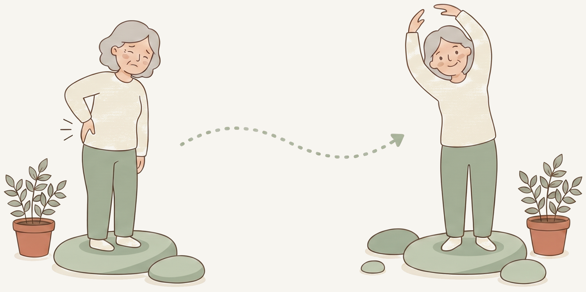
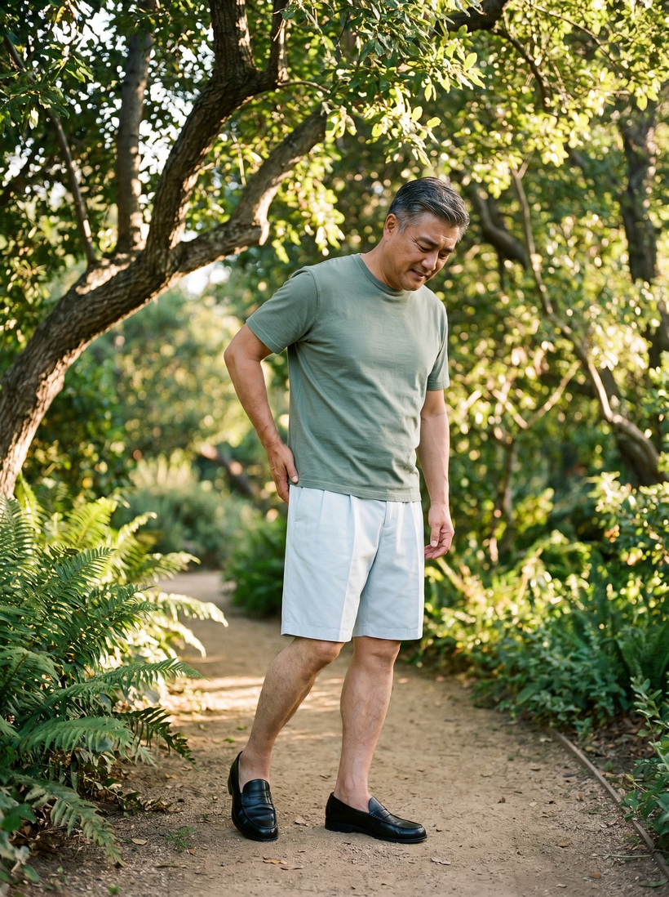
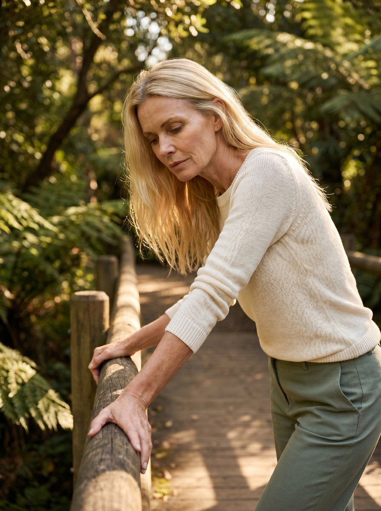
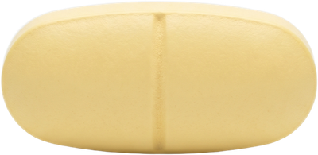
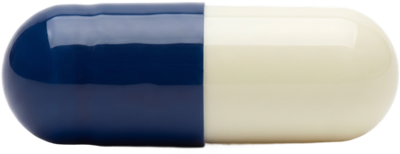
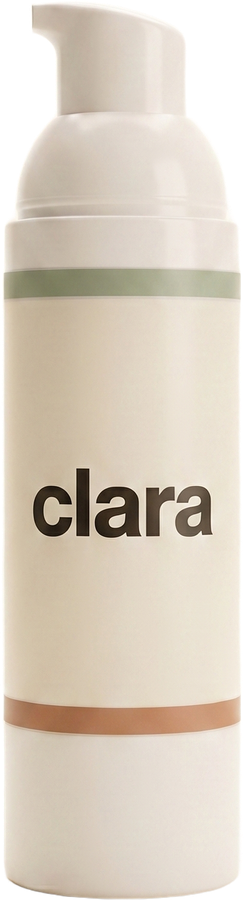
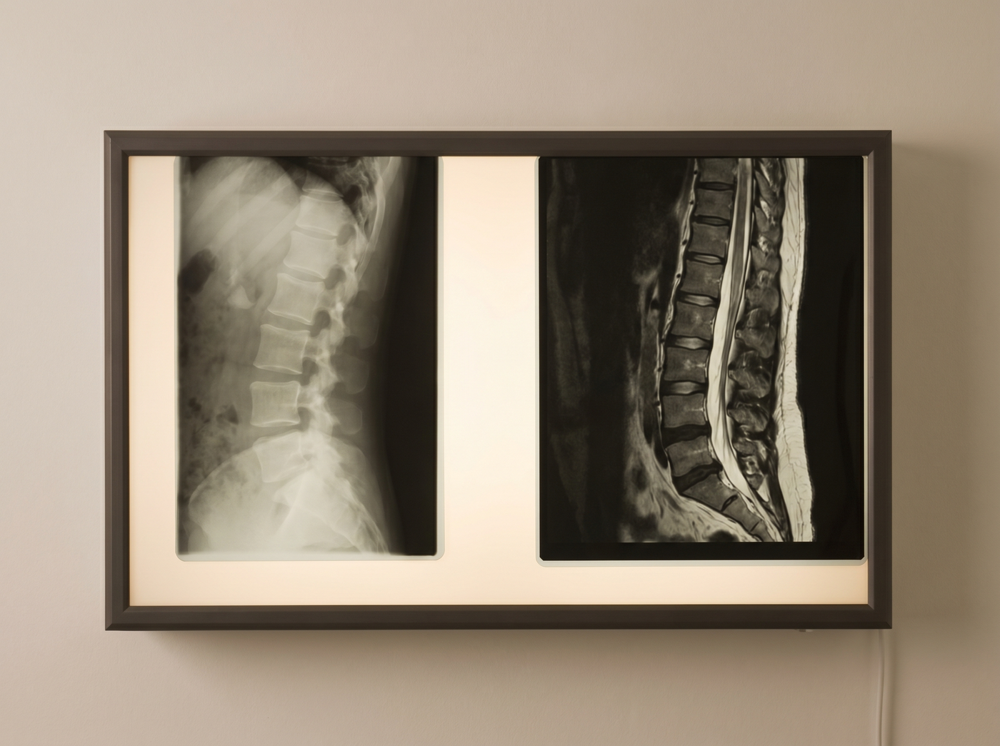

Understanding your back pain
A plain language guide to what is happening in your back, why it hurts, and what actually helps, written for you, not at you.
/back-pain-home-1600.jpg)
First, a reassurance worth reading slowly
Back pain is the most common pain humans get. About one in five Canadian adults has it right now.(1) And here is the part that matters most: 80 to 90 percent of back pain has no dangerous cause you can find on a scan. The spine looks fine, the muscles and joints are working through a rough patch, and most of the time it gets better.(1)
7 out of 10 people with new back pain recover within a week, and about 9 out of 10 within six weeks.(2)

6 weeksThat does not mean your pain is not real. It is. It also does not mean you should ignore it. It means the right response is almost never panic, and almost always: understand what is happening, keep moving, and use the right kind of help. This guide is the help.
Which kind of back pain do you have? The three timelines.
How long you have had the pain changes what is likely going on and what works.
What is actually causing it?
A normal lumbar spine on film. A scan can look “abnormal” in people with no pain at all, which is why we rarely image routine back pain.
If you have had an MRI or X-ray, you may have heard words like “disc bulge,” “facet arthritis,” or “degenerative change.” Here is the honest truth: those same findings show up in a large share of pain free adults. In one major review, more than half of people in their 40s with no back pain at all had a disc bulge on MRI.(3) Your scan can show “abnormalities” that have nothing to do with what hurts. That is why we usually do not recommend imaging for routine back pain.
What we can say is that mechanical back pain, the most common kind, usually behaves in one of four patterns, and you can often tell which one from what makes it worse and better:

Acute nervePain mainly down the leg, often constant, worse with most movement. An irritated nerve root.
ClaudicationLegs feel heavy after walking, relieved quickly by sitting or bending forward.Find your pattern in 2 minutes
Knowing your pattern tells us which exercises will help, and which could make it worse. Our pattern finder walks you through it and points you to the matched routine.
Take the pattern finder →What actually works, and what doesn’t
This is the section that will save you the most money and frustration. The evidence is clear, and a lot of what is commonly recommended simply does not work.
For acute back pain (the first 6 weeks)
What helps
- Reassurance. Knowing your pain is probably not dangerous is itself a treatment.
- Staying active. Move gently, walk if you can. Your back is built to be used.
- Superficial heat, heating pads, hot showers.
- An NSAID if you need a pill (ibuprofen or naproxen), first line.(4)
- A short muscle relaxant course, only if needed, only 1–2 weeks.
What doesn’t
- Acetaminophen (Tylenol), no better than placebo for back pain.(5)
- Gabapentin or pregabalin, don’t help, real side effects.
- Opioids, don’t speed recovery, real harm. clara does not prescribe them.
- Bed rest, actually slows recovery.
- Routine X-rays or MRIs, without a red flag, they mislead more than help.
For chronic back pain (more than 12 weeks)
The single most important thing to understand: medication alone will not fix chronic back pain. Pills can take the edge off, but the only intervention with lasting benefit, the thing that keeps helping after you stop, is movement. This is the strongest finding in chronic back pain research.(4, 6)

Exercise, the strongest medicine
The most studied winners are Pilates, McKenzie style directional exercises, core stability work, yoga or tai chi, general strengthening, and plain walking. The right kind depends on your pattern.(6)
Physiotherapy, seen early
Specifically the active parts. A physiotherapist who gets you moving early makes opioids and surgery far less likely, and keeps your plan tailored as you progress.

Cognitive behavioural therapy
Chronic pain has a real “brain learns pain” component, and CBT helps retrain it. It is proven, not pseudoscience, and with clara it can happen from your own couch, on a screen, on your schedule.
Movement is the medicine
Your exercise plan does the heavy lifting. clara’s job is to make that work more comfortable and more consistent, with a matched exercise series, a compound cream or the right medication when it helps, and a doctor who reviews everything.
Comprehensive medication plan



Medications: what we’d prescribe, and what we won’t
clara prescribes medication when it is clinically appropriate and supported by evidence, and declines what doesn’t work, even when it is commonly available. A doctor reviews every order.
May prescribe
- NSAIDs (first line): ibuprofen, naproxen, diclofenac, celecoxib, meloxicam
- Topical diclofenac gel, far fewer body wide side effects
- Short course muscle relaxants for acute pain (1–2 weeks)
- Duloxetine for chronic pain, when appropriate
Won’t prescribe
- Acetaminophen for back pain, evidence shows it doesn’t work
- Gabapentin / pregabalin, not effective for back pain
- Benzodiazepines, no benefit, real dependence risk
- Opioids of any kind, clara’s commitment is no opioids
We ask about your medical history before prescribing, because NSAIDs affect the stomach, kidneys, and heart, and muscle relaxants cause drowsiness. That is the standard screening every prescriber does; we just do it through a questionnaire instead of in a room.
What recovery looks like
An honest note: about 1 in 5 people with chronic back pain have ongoing, fluctuating pain even with the best plan. In those cases the goal is not zero pain, it is less pain, more function, and making sure pain doesn’t run your life.
Most back pain gets better. The right plan is mostly movement, supported by the right medication when needed, and education that lasts longer than any one prescription.
The “should I get a scan?” question

It depends, but most likely not. Imaging finds “abnormal” results in pain free people very often.(3) The risk is not the scan itself, it is what tends to happen next: referrals, injections, and treatment for findings that were not causing pain. Imaging is appropriate when you have a red flag, when pain hasn’t improved after 6 to 8 weeks of proper treatment, or when your doctor suspects a specific problem. Otherwise, the treatments work whether or not you have a “disc bulge” on a scan.
When NOT to use clara, see a doctor or ER now

clara is built for routine, non emergency back pain. A small number of symptoms are signs of something that needs in person care. If any of these apply, do not order through clara, see a doctor or go to the emergency room:
- Loss of bladder or bowel control, or numbness in the “saddle” area between the legs, this can signal a rare emergency called cauda equina syndrome. Go to the ER immediately.
- Real weakness in a leg or foot (not just pain) when you try to push or lift.
- A recent significant injury, a fall, a car accident, or a sports impact.
- Fever, unexplained weight loss, or a history of cancer with new back pain.
- Pain that is clearly worse at night, or a throbbing feeling in your belly.
If you are not sure, err on the side of caution and see your family doctor or a clinic. clara is for the 90% of back pain that is routine; the remaining 10% deserves in person attention.
Sources
- Hartvigsen J, Hancock MJ, Kongsted A, et al. What low back pain is and why we need to pay attention. Lancet. 2018;391(10137):2356-2367.
- Menezes Costa L da C, Maher CG, Hancock MJ, et al. The prognosis of acute and persistent low-back pain: a meta-analysis. CMAJ. 2012;184(11):E613-E624.
- Brinjikji W, Luetmer PH, Comstock B, et al. Systematic literature review of imaging features of spinal degeneration in asymptomatic populations. American Journal of Neuroradiology. 2015;36(4):811-816.
- Qaseem A, Wilt TJ, McLean RM, Forciea MA. Noninvasive treatments for acute, subacute, and chronic low back pain: a clinical practice guideline from the American College of Physicians. Annals of Internal Medicine. 2017;166(7):514-530.
- Williams CM, Maher CG, Latimer J, et al. Efficacy of paracetamol for acute low-back pain: a double-blind, randomised controlled trial. Lancet. 2014;384(9954):1586-1596.
- Hayden JA, Ellis J, Ogilvie R, et al. Exercise therapy for chronic low back pain. Cochrane Database of Systematic Reviews. 2021;9:CD009790.
- Skljarevski V, Zhang S, Desaiah D, et al. Duloxetine versus placebo in patients with chronic low back pain. Journal of Pain. 2010;11(12):1282-1290.
This guide is for education and is not a substitute for your clara doctor’s advice. Your plan is personalised to you. Seek urgent care for new leg weakness, saddle numbness, or bladder or bowel changes.